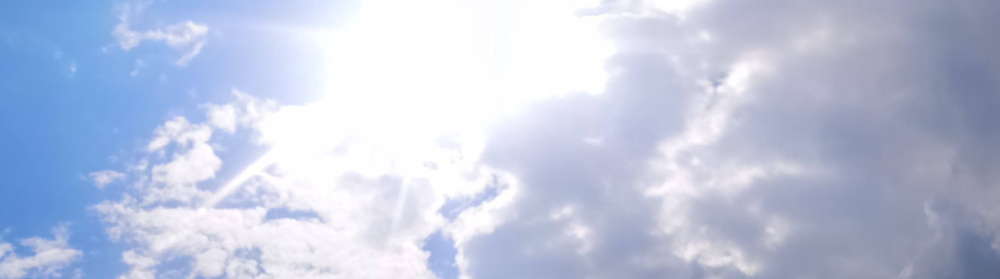

Charlette's Website
#1st Blog
Cloud Gazing
Looking up into the sky I see their freedom. The clouds, they glide across the beautiful blue as if they are exploring the world beneath them. Pausing for a moment, and then floating on as if they had stopped to give me a second glance. I imagine being among them, looking down at the people and seeing what the world below me is doing. Up here the air is so fresh and clear, looking down I see how the worlds colour is changing. Wearing Autumn - covered in splotches of browns, oranges, reds but also lively bits of green. Losing my concentration, I begin to fall sinking through the soft clouds. I reach out to hang on, but they melt to my touch and disappear through my pale fingers, as I land back into my body. I can feel the wet grass tickling my skin and my hair clinging to my cheeks. I wonder if the clouds want to know what its like to be me.
-Charlette
Heavy and full, they float across the sky. Their weight almost too much to hold, as though they are about to burst, their wisdom and knowledge about to fall and hit us harder than we can expect. They have aged with what the world has put them through, carrying the burdens of what they see below them. It is shown in the dark shadows embedded I their curves, too harsh in comparison to the bits of white and purity they seem to also carry. Through what they have seen they are still able to be pure and light - showing the world that they are stronger than what we may think. Yet the darkness is still there, threatening to spill out. So fragile yet so strong. I wonder why these thoughts cross my mind. The clouds begin to fade as I look at the blonde spiderwebs being blown into my view.
-Alijah
